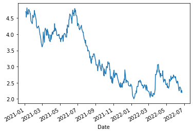

Contents
from pandas_datareader import DataReader
w = DataReader('COGN3.SA', data_source='yahoo', start='2021-01-01')
print(w)
High Low Open Close Volume Adj Close
Date
2021-01-04 4.83 4.62 4.68 4.70 60864100 4.70
2021-01-05 4.79 4.58 4.68 4.67 53735300 4.67
2021-01-06 4.69 4.50 4.67 4.53 62974400 4.53
2021-01-07 4.92 4.58 4.65 4.62 141328200 4.62
2021-01-08 4.86 4.61 4.66 4.82 59322800 4.82
... ... ... ... ... ... ...
2022-06-20 2.42 2.29 2.38 2.31 23238100 2.31
2022-06-21 2.38 2.18 2.33 2.20 40461400 2.20
2022-06-22 2.30 2.14 2.16 2.25 33398100 2.25
2022-06-23 2.32 2.22 2.26 2.26 27202900 2.26
2022-06-24 2.30 2.18 2.28 2.20 39525900 2.20
[367 rows x 6 columns]
w.Close.plot();
